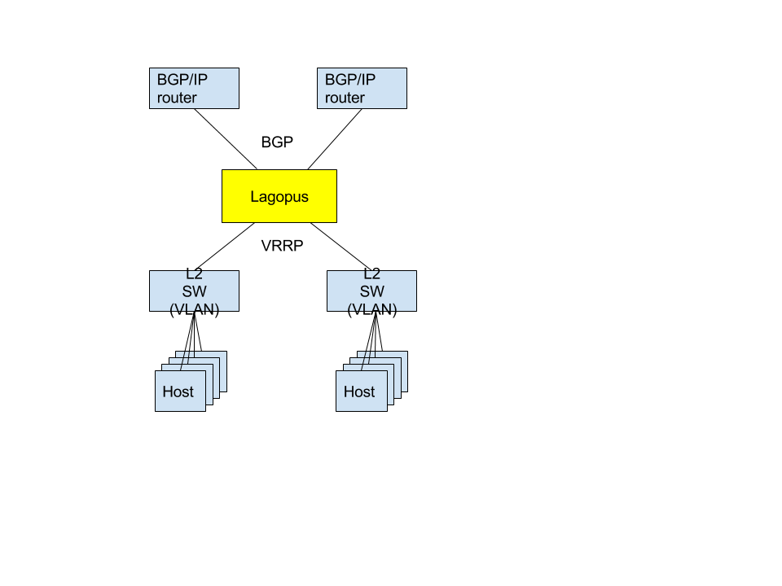
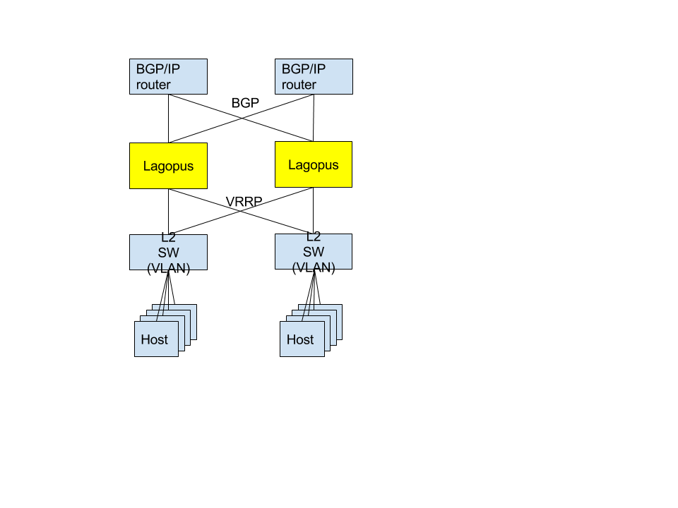
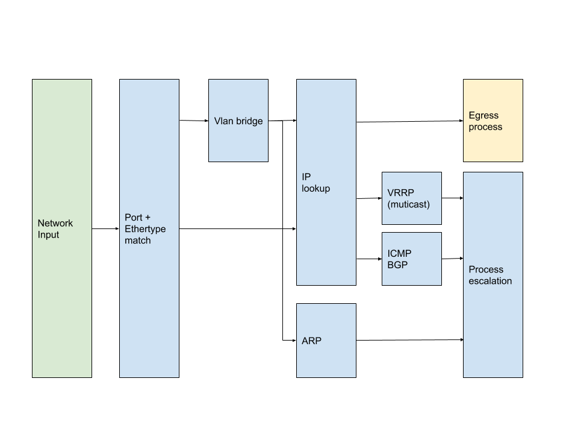
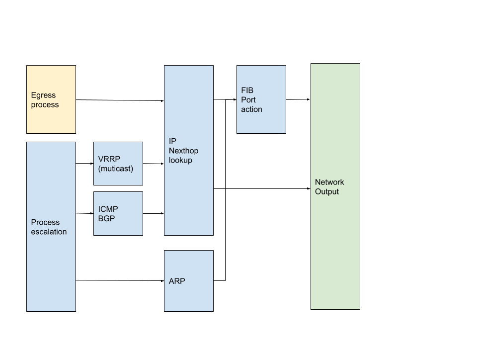
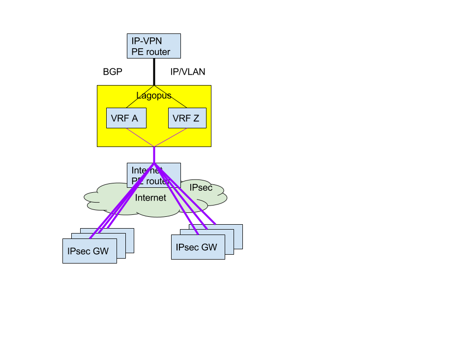

7. 適応先¶
以下の次期Lagopusの有力な適応先について，具体的な要件を示す．
- BGP Router
- IPsec Router
- Simple virtual firewall (API-based control)
- vUTM
- EVPN gateway
- NFV vSW
- OpenFlow Switch
7.1. BGP Router¶
7.1.1. 構成¶
サーバサブネットと上流ルータを接続し，ルーティングを行う．ここで，BGPによりサーバサブネットの経路情報を上流ルータに広告するとともに，上流ルータから外部サブネットの経路情報を取得し，ルーティングテーブルに反映する．また，VRRPによる冗長化にも対応する．
サーバサブネットはVLANによる複数のサブネットから構成される．このためLagopusは1物理ポートに対し，複数のVLANインターフェースをサポートする．またVRRPはVLANインターフェース毎に独立に動作する．
2台のLagopusで冗長系を構成した場合は以下のようになる．
7.1.2. 要件¶
- 機能要件
- プロトコル
- シグナリングプロトコル
- BGP-4
- VRRP
- ARP
- プロトコルフォーマット
- Ethernet, VLAN (IEEE 802.1Q)
- IPv4
- 管理プロトコル
- CLI or 設定コマンド
- SNMP
- シグナリングプロトコル
- プロトコル
7.1.3. パケット処理¶
 7.2. IPsec Router¶
7.2.1. 構成¶
複数の顧客を収容するVPNサービスを提供する．顧客毎に複数拠点からの接続が可能であり，拠点間のルーティングを行う． 顧客毎にVRFを割り当て，拠点間の転送は顧客ごとのVRFで行う．
7.2.2. 要件¶
- 機能要件
- プロトコル
- シグナリングプロトコル
- BGP-4
- VRRP
- ARP
- プロトコルフォーマット
- Ethernet, VLAN (IEEE 802.1Q)
- VRF
- IPv4, IPv6
- IPsec
- IKEv2
- 管理プロトコル
- CLI or 設定コマンド
- SNMP
- sFlow
- nFlow v9 or IPFIX
- シグナリングプロトコル
- プロトコル